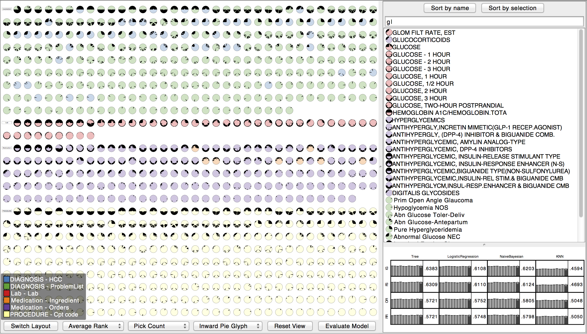

INFUSE: Interactive Feature Selection for Predictive Modeling of High Dimensional Data
Josua Krause, Adam Perer, Enrico Bertini

Predictive modeling techniques are increasingly being used by data scientists to understand the probability of predicted outcomes. However, for data that is high-dimensional, a critical step in predictive modeling is determining which features should be included in the models. Feature selection algorithms are often used to remove non-informative features from models. However, there are many different classes of feature selection algorithms. Deciding which one to use is problematic as the algorithmic output is often not amenable to user interpretation. This limits the ability for users to utilize their domain expertise during the modeling process. To improve on this limitation, we developed INFUSE, a novel visual analytics system designed to help analysts understand how predictive features are being ranked across feature selection algorithms, cross-validation folds, and classifiers. We demonstrate how our system can lead to important insights in a case study involving clinical researchers predicting patient outcomes from electronic medical records.
Java implementation.@article{6876047,
author={Krause, J. and Perer, A. and Bertini, E.},
journal={Visualization and Computer Graphics, IEEE Transactions on},
title={{INFUSE: Interactive Feature Selection for Predictive Modeling of High Dimensional Data}},
year={2014},
month={},
volume={PP},
number={99},
pages={1-1},
keywords={Algorithm design and analysis;Data models;Data visualization;Feature extraction;Layout;Prediction algorithms;Predictive models},
doi={10.1109/TVCG.2014.2346482},
ISSN={1077-2626}
}